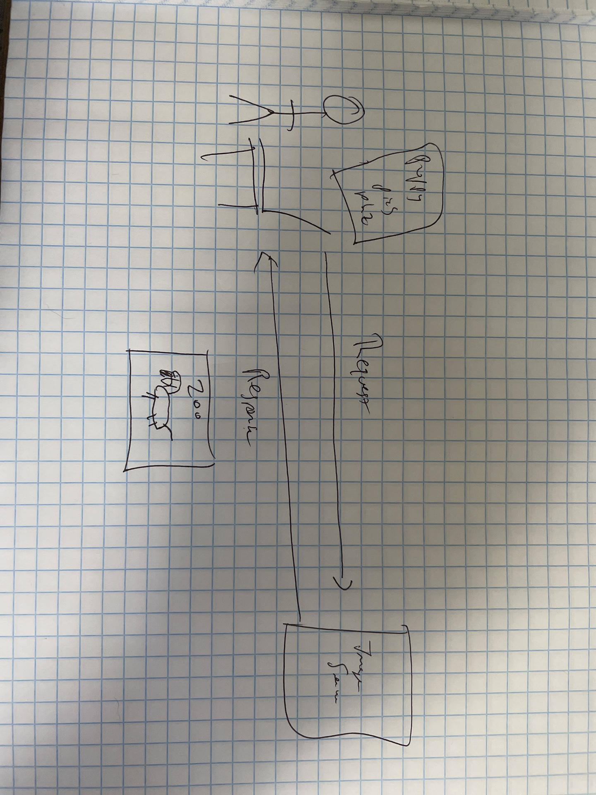
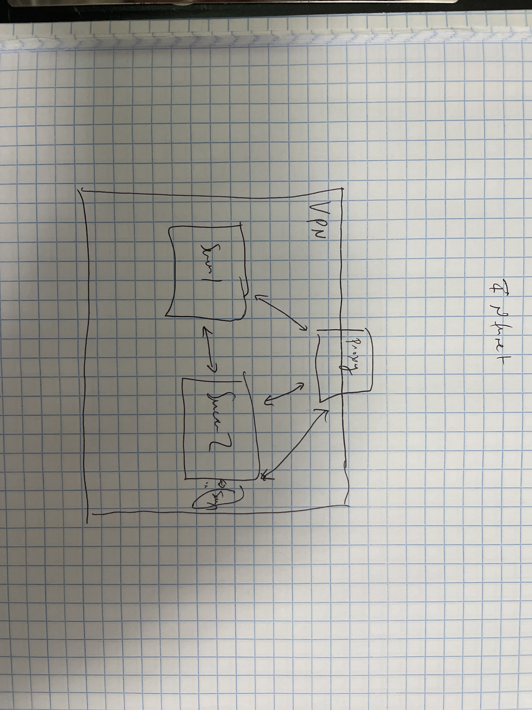

Chapter 4 Networking and the Internet
Computers communicate with each other via networking. Generally, networking refers to the rules and protocols computers use to find and communicate with one another.
Before we get into how you can do networking, a little background on what goes over the network. Computers communicate with each other on a call-and-response model. If I want to go to a website, check my bank account, send a chat message, or watch a movie on Netflix, my computer sends a request off to another computer (a server in most cases) and awaits a response.
The way computer networks work is reasonably similar to the way physical mail works. When you ask your computer to do something over a network, it turns that request into one or more packets. A packet has a header that includes the address it’s going to along with details about the packet itself. Due to some cool information theory, it turns out that it works better to take large payloads, split them up into smaller payloads, and send each packet off independently. The header of each packet includes the destination address, as well as information about how to reconstruct the payloads on the other end.
There are a number of different sets of rules and protocols in play here that range from the physical interconnections of the wires along the way. There are two really layers that are particularly important to understand from the perspective of a data scientist working on a server.

The important layers to understand correspond to how to read what’s on the outside of the packet, and what’s on the inside.
The first part of this chapter is some general information on how computer networks function. The latter part is about how networks tend to be configured in enterprise settings and how you can go about setting up your own network.
4.1 TCP/IP: How packets find their way
TCP/IP is a set of protocols that collectively define how networked computers create and address packets, and how those packets are routed and reconstructed when they get where they’re going.
You’ve probably heard of IP in the context of an IP address. When a computer joins a network, it is given an IP address. An IP address is a number, unique within any given network, that determines where a given computer is.
As the internet has gotten more and more computers on it, it turns out that we’re running out of IP addresses. Currently, you will see both the old type of IP addresses, called IPv4 and the new type, IPv6, in use. There are only about 4.3 billion IPv4 addresses, which it turns out isn’t that much in the modern world, especially as large blocks of those addresses are reserved and are not available for public use. In constrast, the number of IPv6 addresses is 39 digits long.
This is mostly just trivia, expect that in your every day life working with servers, you’ll see a lot of IP addresses, and it’s important to know what they look like. Each block has a particular meaning, which isn’t super important for our purposes.
IPv4 address - four blocks of 8-bit fields (integers up to 256): 0.0.0.0 to 255.255.255.255
IPV6 address example: eight blocks of hexadecimal (0-9 + a-f) digits separated by colons, with certain rules about dropping multiple zeroes and using colons to denote successive zeroes - 2001:0db8:85a3:0000:0000:8a2e:0370:7334 or 2001:db8::
But for the most part, we don’t interact with IP addresses. We’re much more used to seeing the locations of web sites defined in terms of a URL like google.com. When you type a URL into your web browser, your computer sends a request off to a specialized phonebook server calls a DNS (Domain Name System) server. The DNS server translates the URL you typed into an IP address to actually locate the server.
The way DNS actually works is complicated, but one of the most important things to know is that it’s kinda a pain. If you’re trying to set up a server at an actual URL, you’ll need to register a domain name and get it associated with your server. This takes time – they say as much as 24-48 hours for DNS changes to propagate through the public servers that every computer connected to the internet might reach.
In order to avoid having to constantly reach out to DNS servers, your computer keeps a DNS cache locally. As you’re working on servers, you may find that something suddenly becomes unreachable. A great first troubleshooting step is always to try using an incognito window as it will ignore your DNS cache and reach out to the DNS server afresh.
4.2 Ports: The last mile
Once a packet gets to the right server, it needs to actually walk through the door. The doors on an individual server are called ports. Each IP address has over 65,000 ports available, but many of those are reserved for special purposes. There’s a cheatsheet of a few you’ll learn pretty quickly at the end of the chapter.
Each port can be bound to exactly one running process and can be open or closed. That means that providing a service to other computers on a network is a three step process – get the service up and running, bind it to a particular port, and make sure the port is accepting incoming traffic.
The last step – checking that the port is open – is a common time-waster for people new to DevOps. Checking that your port is listening is the unplug it and plug it back in of networking configuration.
Note that outbound communication also requires using a port. This isn’t something you have to think about much because your computer will automatically choose a random available port and keep it open for the duration of the network traffic.
4.3 Application Protocols: Reading the mail
So, your packet request has made it to the server on the other end, found the right port, and made it to the listening service. Time to open the envelope. What’s inside?
This is where the application layer protocol kicks in. The application layer protocol defines how the server should understand the request that was sent and what are legitimate things to send back. There are many application layer protocols for everything from file transfers to email traffic, checking user permissions to database access.
There are a few particular application protocols that come up quite often for the working data scientist:
HTTP is how you look at websites in a web browser. To be slightly more technical, defines a client/server relationship where the client makes requests that the server fulfills.
FTP/SFTP is a protocol for transferring files directly from one computer to another.
SSH is a protocol for securely accessing a remote computer over a network. It’s important enough for data scientists that there’s a whole chapter on it.
Websockets are a protocol for doing interactivity with a website. Many popular R and Python web frameworks use websockets, including the Shiny R package and the Streamlit Python package.
4.3.1 HTTP and HTTPs
HTTP is a particularly important protocol to understand because it forms the basis for most of the way we interact with the internet. As a data scientist, you also may need to interact directly with HTTP traffic making API calls or writing your own API to serve data science results to others.
Secured HTTP
End-to-end encryption using Transport Layer Security (TLS) or Secure Sockets Layer (SSL) HTTP over TLS/SSL
Getting and configuring an SSL certificate
4.4 Networking for your data science servers

The biggest and best known of computer networks is the internet. But at its core, the internet is just another computer network, so the same principles apply to both public and private networks.
For the most part,
[Diagram: Common Network Topology]
Most work occurs inside a VPC
IP addresses inside a VPC can be assigned as you wish
- Subject to CIDR block rules
Need translation between inside and outside -> proxy
- If being used for SSH access, usually called bastion
Proxies commonly used to serve as firewalls, network address translators, load-balancers
Forward (outbound) proxy vs reverse (inbound) proxy
Private vs public subnets
Particular ports being “open”
4.5 Special IP Addresses and Ports
127.0.0.1 - localhost
0.0.0.0 - unspecified
All ports below 1024 reserved.
80 - HTTP default
443 - HTTPS default
22 - SSH default
4.6 Special HTTP(S) Codes
200
404
403
4.7 Exercises
Consider going to the website google.com. Draw a diagram of how the following are incorporated: TCP/IP, DNS, HTTP, HTTPS.
Set up a free-tier EC2 instance and put an NGINX server up. Figure out how to allow your computer to access the server, but not your phone. Try accessing it on a non-default port.
Try to HTTP into a fresh EC2 with the default security group. Take a look at the inbound security group rules. Hint: is there an inbound rule on a default HTTP port?
SSH into your EC2 instance and try to reach out to something on the internet (curl…). See if you can change security group rules to shut down access.
Can you do it by changing the IP address range it’s accepting connections from?
Can you do it by changing the listening ports?